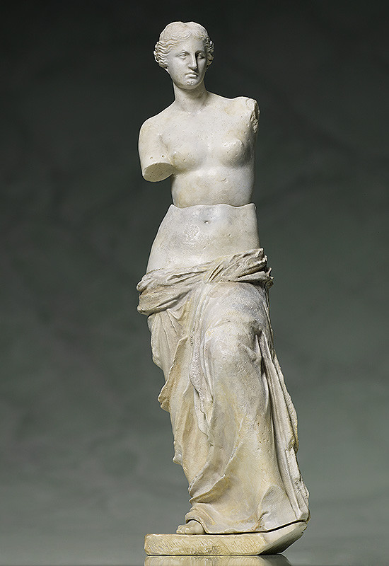
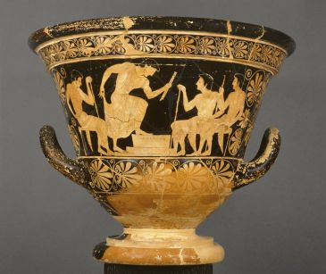
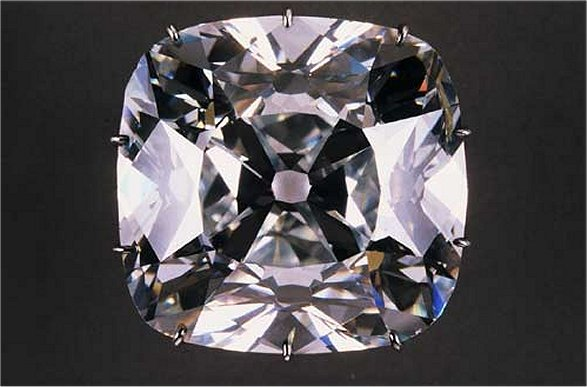
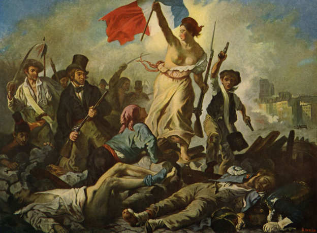
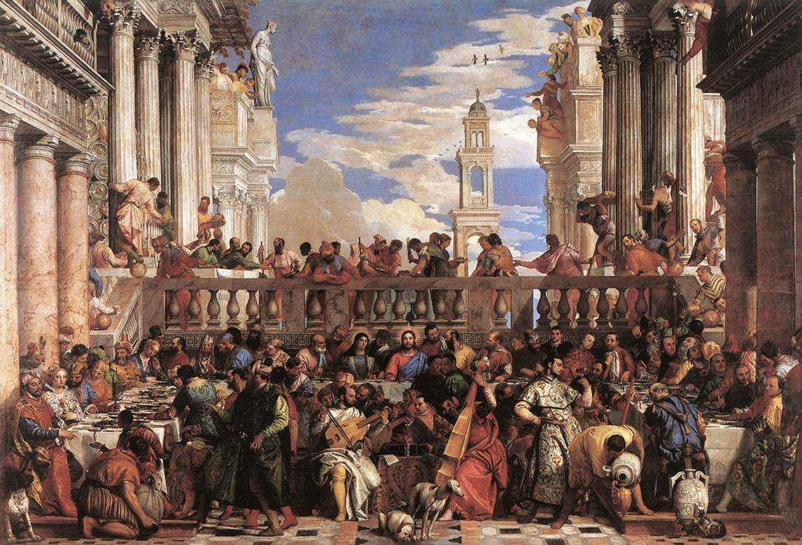
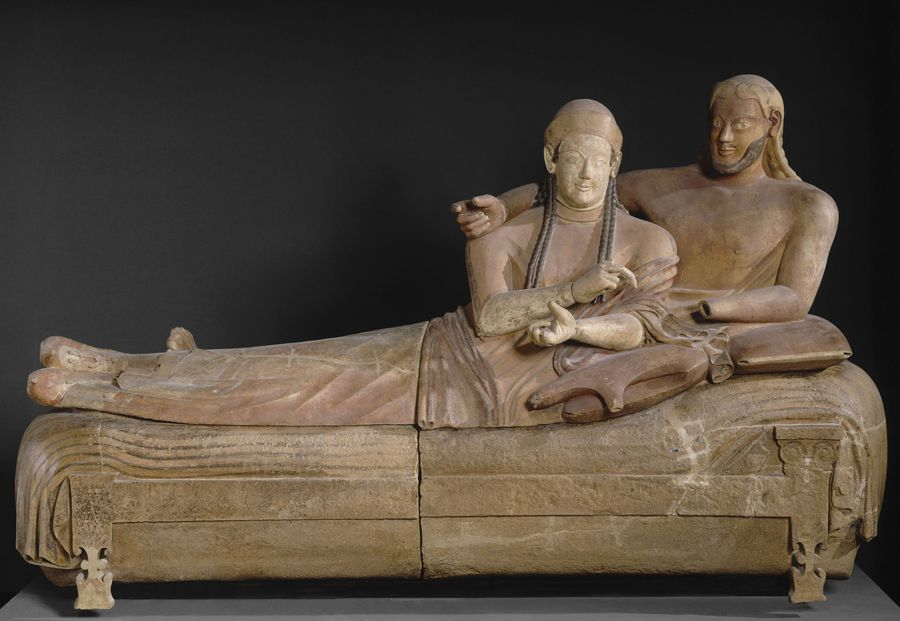
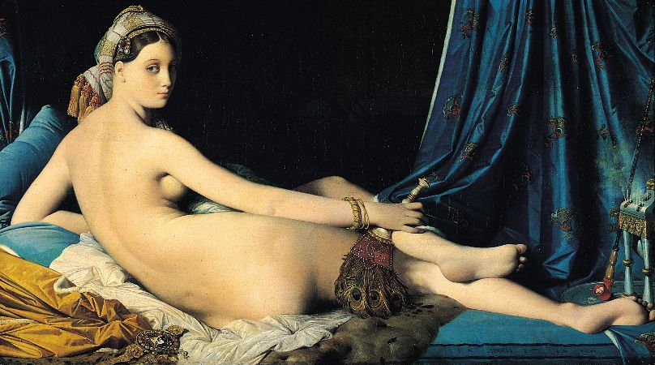
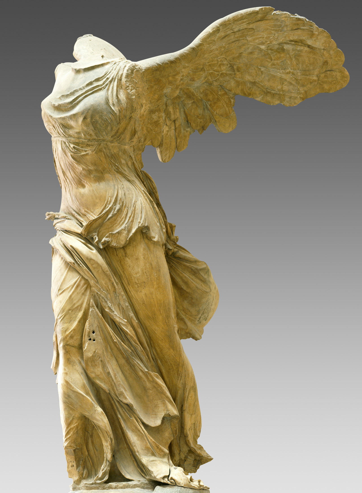

-

La Vénus de Milo, artiste inconnu -

Cratère de Calice, artiste inconnu -

Diamant Le Régent, découvert à Golconde -

La Liberté guidant son peuple, Eugène Delacroix -

Le radeau de la Méduse, Théodore Géricault -

Les noces de Cana, Paul Véronèse -

Les sarcophages des époux de cerveteri, artiste inconnu -

Une odalisque, Jean-Auguste-Dominique Ingres -

Mona Lisa, Léonard de Vinci -

Victoire de Samothrace, artiste inconnu
Célèbre statue grecque de la fin de l'époque hellénistique (130-100 av JC). Elle représente la déesse de l'amour et de la sexualité, Aphrodite.
Découverte en 1820 sur l'île de Milos, les circonstances exactes du signalement de la statue aux autorités françaises sont sujettes à débat.
Artiste
Une inscription sur le socle montre qu'elle pourrait être l'oeuvre d'Alexandros d'Antioche.
Dans l'Antiquité grecque, le cratère est un grand vase servant à mélanger le vin et l'eau.
Ce cratère a été découvert dans la tombe de Vix.
Artiste
Le peintre des Niobides, inspiré sans doute par de grandes fresques d'Athènes et de Delphes, a décoré ce cratère de deux scènes: Apollon et Artémis décimant à coup de flèches les enfants de Niobé, de l'autre Héraclèseentouré par Athéna et des héros en armes.
Diamant blanc découvert en 1698 à Golconde, en Inde du Sud. Il est considéré comme le diamant le plus pur et le plus beau du monde.
Arboré entre autres par le roi Louis XV, la reine Marie-Antoinette et l'empereur Napoléon 1er, il est conservé depuis 1887 au Musée du Louvre.
D'abord désigné sous le nom de Jamchand, le Régent pesait 426 carats lors de sa découverte. Il est ensuite taillé en brillant.
Huile sur toile réalisée en 1830. Il est inspiré de la révolution des Trois Glorieuses.
Par son aspect allégorique t sa portée politique, l'oeuvre est fréquemme choisie comme symbole de la République française ou de la démocratie.
Artiste
Eugène Delacroix est un peintre français considéré comme le principal représentant du romanisme. Il a effectué plusieurs commandes pour l'Etat.
Peinture à l'huile sur toile réalisée en 1818-1819. Il représente un épisode tragique de l'histoire de la marine française: le naufrage de la frégate Méduse, qui séchoue sur un banc de sable au large des côtes de l'actuelle Mauritanie en 1816.
Artiste
Théodore Géricault est un peintre sculpteur, dessinateur et lithographe français. Il est l'incarnation de l'artiste romantique.
Tableau commandé par le bénéction Paul du monastère San Giogo Maggiore, situé à Venise. Le contrat stipule que Véronèse pourra peindre autant de figures qu'il sera possible, que le tableau doit être de même largeur et de même hauteur que le mur de face.
Artiste
Paul Véronèse est un peintre vénitien. Il est connu comme un grand coloriste ainsi que pour ses décorations illusionnistes en fresque et à l'huile.
Le sarcophages des époux est le nom donné aux urnes funéraires étrusques monumentales associées au culte de leurs morts, représentant deux époux allongés ensemble dans la pose du banquet étrusque, et dont les cendres ou les corps inhumés sont contenus dans l'urne.
Frabriquées à Caere vers 520 av JC, elles sont découvertes sur la nécropole de Banditaccia à Cerveteri, dans le Latium.
Plusieurs exemplaires existent.
Peint en 1814 sur une commande de Caroline Murat, soeur de Napoléon 1er et reine consort de Naples.
Le mot odalisque désigne une femme de chambre qui servait le harem du sultant: sont donc présents des éléments et objetcs divers évoquant cette dimension orientale, comme un éventail, des bijoux ou un turban.
Artiste
Jean Auguste Dominique Ingres est un peintre néoclassique français.
Tableau réalisé entre 1503 et 1506 qui représente un portrait mini-corps, probablement celui de Florentine Lisa Gherardini, épouse de Francesco del Giocondo. La Joconde est l'un des rares tableaux attribués de façon certaine à Léonard de Vinci
Artiste
Léonard de Vinci est un peintre florentin et un homme d'esprit universel. Il est décrit comme l'archétype et le symbole de l'homme de la Renaissance.
Monument de sculpture grecque de l'époque hellénistique trouvé dans l'île de Samothrace dans les ruines du sanctuaire des Grands Dieux.
Il est composé d'une statue représentant une femme ailée, la déesse de la victoire Niké, et de sa base en forme de proue de navire.
Sculpture de 2,75 mètres en marbre.